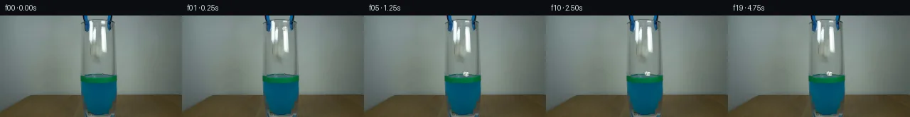

![首帧]()

Round 00
2026-11-05T14:56:27.552668+00:00像素候选变化代码 +251/−0inspection 更新
pixels 287151107e0bca00 · code 8c2af3afc4156137
查看本轮 generate.py 真实 diff
--- previous/generate.py
+++ current/generate.py
@@ -0,0 +1,251 @@
+"""Local source-image compositing and analytic paper/water motion.
+No external imagery, trained models, rendering engines, or network access.
+"""
+from pathlib import Path
+import math
+import numpy as np
+from PIL import Image, ImageDraw, ImageFilter
+from scipy.ndimage import map_coordinates, gaussian_filter
+from artifact_io import save
+
+ROOT = Path(__file__).resolve().parent
+W, H = 256, 144
+S = 6
+source = np.asarray(Image.open(ROOT / 'first_frame.png').convert('RGB'))
+rng = np.random.default_rng(137)
+
+
+def polygon_mask(points, blur=0.28):
+ m = Image.new('L', (W*S, H*S))
+ ImageDraw.Draw(m).polygon([(round(x*S), round(y*S)) for x,y in points], fill=255)
+ m = m.resize((W,H), Image.Resampling.LANCZOS)
+ if blur:
+ m = m.filter(ImageFilter.GaussianBlur(blur))
+ return np.asarray(m, dtype=np.float64)/255
+
+
+def heal_region(rgb, mask):
+ """Discrete harmonic fill confined to a small, manually observed region."""
+ out = rgb.astype(np.float64).copy()
+ unknown = mask > .025
+ # Initialize by row-wise interpolation between fixed neighboring pixels.
+ for y in range(H):
+ xs = np.flatnonzero(unknown[y])
+ if not len(xs):
+ continue
+ l, r = max(0,xs[0]-1), min(W-1,xs[-1]+1)
+ for x in xs:
+ f = (x-l)/max(1,r-l)
+ out[y,x] = rgb[y,l]*(1-f) + rgb[y,r]*f
+ # Four-neighbor diffusion converges rapidly on these narrow regions.
+ for _ in range(240):
+ a = np.pad(out, ((1,1),(1,1),(0,0)), mode='edge')
+ avg = (a[:-2,1:-1]+a[2:,1:-1]+a[1:-1,:-2]+a[1:-1,2:])/4
+ out[unknown] = avg[unknown]
+ return rgb*(1-mask[:,:,None]) + out*mask[:,:,None]
+
+
+# The short pale patch at the inner rim is the supplied held paper.
+# Do not remove the much longer glass reflection below it.
+rim_paper_mask = polygon_mask([(141.5,9.1),(145.0,8.7),(149,10),
+ (149,13.3),(146.2,14.4),(142.1,13.6)], .48)
+rim_clean = heal_region(source, rim_paper_mask)
+
+# Only the grabber tips open; the upper ends stay attached beyond the frame.
+left_mask = polygon_mask([(116,0),(122,0),(122.4,7.0),(125.7,11.6),
+ (125.5,18.7),(124.1,22.5),(120.3,22.7),
+ (117.8,18.5),(117.3,11),(115.2,1.8)], .23)
+right_mask = polygon_mask([(153,0),(158.4,0),(157.1,8.7),(156.3,15),
+ (154.5,20.8),(151.5,20.2),(150.9,16),
+ (151.4,9.2),(152,4)], .23)
+tool_clean = heal_region(rim_clean, np.maximum(left_mask,right_mask))
+yy, xx = np.mgrid[:H,:W].astype(np.float64)
+open_profile = np.clip((yy-5)/15,0,1)
+open_profile = open_profile*open_profile*(3-2*open_profile)
+
+
+def opened_grabber(amount):
+ bg = tool_clean.copy()
+ for mask, direction in [(left_mask,-1), (right_mask,1)]:
+ shift = direction*amount*open_profile
+ coords = np.array([yy, xx-shift])
+ alpha = map_coordinates(mask, coords, order=1, mode='constant', cval=0)
+ colors = np.stack([map_coordinates(rim_clean[:,:,c],coords,order=1,
+ mode='nearest') for c in range(3)], axis=-1)
+ bg = bg*(1-alpha[:,:,None])+colors*alpha[:,:,None]
+ return bg
+
+
+# A compact paper texture is constructed from irregular folds. High resolution
+# drawing is filtered back to 256x144 for fractional-pixel motion and edges.
+P = 144
+paper = Image.new('RGBA',(P,P))
+d = ImageDraw.Draw(paper)
+C, Q = P/2, 12.0
+
+def ppoly(points, color):
+ d.polygon([(C+x*Q,C+y*Q) for x,y in points], fill=color)
… diff truncated; 164 more lines …